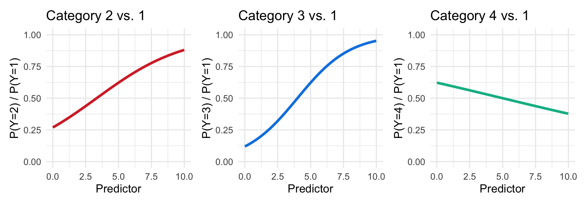
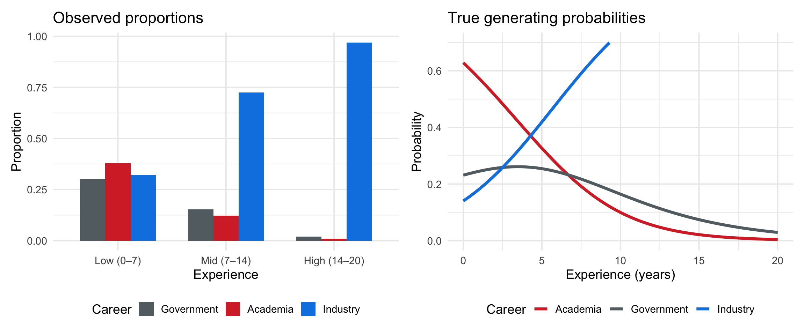
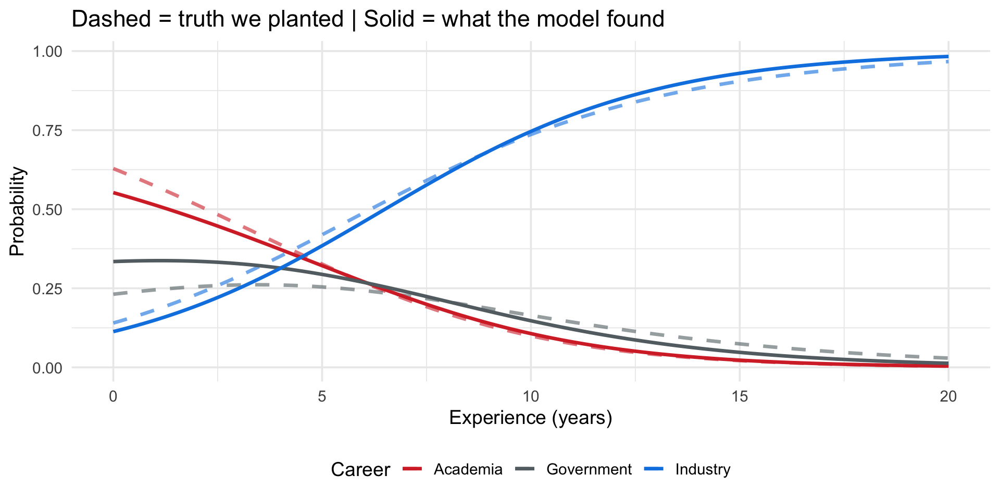
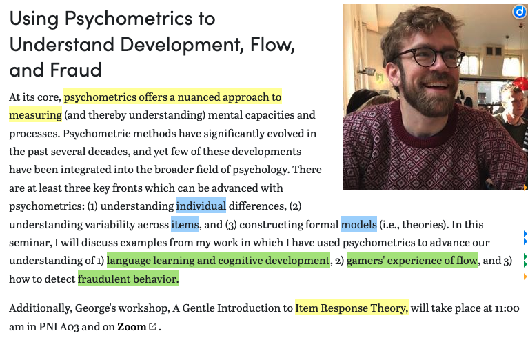

Princeton University
2026-03-02
From ordinal to multinomial
A motivating simulation: Career roulette
Application: NHANES health ratings
nnet::multinom()Ordered outcomes: Low < Medium < High
We modeled cumulative probabilities \(P(Y \leq k)\) using the logit link
\[\text{logit}\big(P(Y \leq k)\big) = \alpha_k - \beta X\]
Note
Today: What happens when your outcome categories have no natural ordering?
Last time we saw outcomes with a clear ranking
Ordered (ordinal regression)
Unordered (??? regression)
The problem
Can you say Democrat < Republican < Independent? Is CBT < DBT < psychodynamic?
There’s no meaningful way to rank these. Cumulative splits don’t make sense.
Liu uses health status (poor, fair, good, excellent) as the outcome.
Isn’t that ordinal?!
Liu explicitly acknowledges this:
“Although the multinomial logistic regression model is normally used to estimate nominal response variables, it is an alternative to estimate ordinal response variables when the proportional odds assumption is violated.”
Note
Two reasons to use multinomial regression:
Today we focus on reason 1 — the outcome truly has no order.
Imagine 3 career paths — academia, industry, government, and 1 predictor, years of work experience.
Experience pushes people toward industry and away from academia, but has little effect on government
There’s no natural ordering: academia is not “less than” government
If we force an ordering (academia = 1, government = 2, industry = 3) and fit an ordinal model:
The key difference
Ordinal regression: K − 1 thresholds, 1 slope per predictor (shared across splits)
Multinomial regression: K − 1 intercepts, K − 1 slopes per predictor (each category gets its own)
\[\begin{array}{lll} \textbf{Logistic} & \text{2 categories} & \text{1 intercept, 1 slope} \\[6pt] \textbf{Ordinal} & \text{K ordered categories} & \text{K−1 thresholds, } \mathbf{1} \text{ slope (shared)} \\[6pt] \textbf{Multinomial} & \text{K unordered categories} & \text{K−1 intercepts, } \mathbf{K−1} \text{ slopes (category-specific)} \end{array}\]
Ordinal (last time)
\[\begin{aligned} L_1 &= \alpha_1 - \beta x \\ L_2 &= \alpha_2 - \beta x \\ L_{K-1} &= \alpha_{K-1} - \beta x \end{aligned}\]
Same \(\beta\) everywhere — proportional odds
Multinomial (today)
\[\begin{aligned} L_1 &= \alpha_1 + \beta_1 x \\ L_2 &= \alpha_2 + \beta_2 x \\ L_{K-1} &= \alpha_{K-1} + \beta_{K-1} x \end{aligned}\]
Each category gets its own \(\beta_j\)
\[\log\bigg(\frac{P(Y = j)}{P(Y = K)}\bigg) = \beta_{0j} + \beta_{1j} x_1 + \cdots + \beta_{pj} x_p\]
for \(j = 1, 2, \ldots, K-1\)
Each equation is its own logistic regression — but they’re estimated simultaneously
The chapter calls these log(mu[,2]/mu[,1]), log(mu[,3]/mu[,1]), etc.
Interpretation
\(\beta_{1j}\): when \(x_1\) increases by one unit, the log-odds of being in category \(j\) vs. the baseline change by \(\beta_{1j}\)
\(\exp(\beta_{1j})\): the odds ratio — the multiplicative change in odds of category \(j\) vs. baseline
Extension of Bernoulli and binomial distributions
When you have more than two outcomes and fixed number of trials
\[P(X_1 = x_1, X_2 = x_2, \ldots, X_k = x_k) = \frac{n!}{x_1! x_2! \cdots x_k!} p_1^{x_1} p_2^{x_2} \cdots p_k^{x_k}\]
\[\text{Mean of } X_i = E[X_i] = n \cdot p_i\]\[\text{Variance of } X_i = \text{Var}(X_i) = n \cdot p_i \cdot (1 - p_i)\]
\[\begin{array}{rcl} L_1 &=& \alpha_1-\beta_1x_1-\cdots-\beta_p X_p\\ L_2 &=& \alpha_2-\beta_1x_1-\cdots-\beta_p X_p & \\ L_{J-1} &=& \alpha_{J-1}-\beta_1x_1-\cdots-\beta_p X_p \end{array}\]
\[\begin{array}{rcl} L_1 &=& \alpha_1+\beta_1x_1+\cdots+\beta_p X_p\\ L_2 &=& \alpha_2+\beta_2x_1+\cdots+\beta_p X_p & \\ L_{J-1} &=& \alpha_{J-1}+\beta_jx_1+\cdots+\beta_p X_p \end{array}\]
\[P(y_i = 0|x_i) = P_{i0}\] and \[P(y_i = 1|x_i) = P_{i1}\]
\[\log\bigg(\frac{p_{i1}}{p_{i0}}\bigg) = \beta_{0k} + \beta_{1k} x_i\]
Slope: \(\beta_1\): when x increases by one unit, the odds of Y = 1 vs. baseline is expected to multiply by a factor or \(exp(\beta)\)
Intercept: \(\beta_0\): when x = 0 the odds of Y = 1 is expected to be \(exp(\beta)\)

Each comparison has its own intercept and slope. The predictor can push toward one category and away from another — something ordinal regression cannot do.
Easier to understand multinomial regression if we simulate it from scratch and watch each step.
Just like our loaded dice helped us understand ordinal regression.
300 people choosing among 3 careers based on years of work experience.
set.seed(504)
n <- 300
experience <- runif(n, 0, 20)
# ── TRUE PARAMETERS (log-odds vs. Government baseline) ──
b0_acad <- 1.0; b1_acad <- -0.15 # academia: popular early, fades
b0_ind <- -0.5; b1_ind <- 0.20 # industry: unpopular early, rises
# Linear predictors (Government is reference. Fixed at 0)
score_govt <- rep(0, n)
score_acad <- b0_acad + b1_acad * experience
score_ind <- b0_ind + b1_ind * experienceThe truth we’re planting
How do linear predictors become probabilities? Take one person with experience = 5 years:
Step 1: Compute scores
\[\text{score}_{\text{acad}} = 1.0 + (-0.15)(5) = 0.25 \qquad \text{score}_{\text{ind}} = -0.5 + (0.20)(5) = 0.50 \qquad \text{score}_{\text{govt}} = 0\]
Step 2: Exponentiate → Step 3: Normalize (divide by sum)
\[p_k = \frac{\exp(\text{score}_k)}{\sum_j \exp(\text{score}_j)} \quad \Rightarrow \quad p_{\text{acad}} = \frac{e^{0.25}}{e^{0.25} + e^{0.50} + e^{0}} = \frac{1.28}{3.93} = 0.33\]
\[p_{\text{ind}} = \frac{1.65}{3.93} = 0.42 \qquad p_{\text{govt}} = \frac{1.00}{3.93} = 0.25\]
Step 4: Sample one career with those probabilities → this person happens to choose Industry
# Softmax → probabilities
denom <- exp(score_govt) + exp(score_acad) + exp(score_ind)
p_govt <- exp(score_govt) / denom
p_acad <- exp(score_acad) / denom
p_ind <- exp(score_ind) / denom
# Sample one career per person
career <- sapply(1:n, function(i) {
sample(c("Academia", "Industry", "Government"),
size = 1,
prob = c(p_acad[i], p_ind[i], p_govt[i]))
})
sim_data <- tibble(
experience = experience,
career = factor(career, levels = c("Government", "Academia", "Industry"))
)
sim_data %>% count(career)# A tibble: 3 × 2
career n
<fct> <int>
1 Government 48
2 Academia 52
3 Industry 200
The careers trade places as experience increases. No single gradient can capture this.
| exp_bin | career | n | prop | log_odds_vs_govt |
|---|---|---|---|---|
| Low (0-7) | Government | 31 | 0.301 | 0.000 |
| Low (0-7) | Academia | 39 | 0.379 | 0.230 |
| Low (0-7) | Industry | 33 | 0.320 | 0.063 |
| Mid (7–14) | Government | 15 | 0.153 | 0.000 |
| Mid (7–14) | Academia | 12 | 0.122 | -0.223 |
| Mid (7–14) | Industry | 71 | 0.724 | 1.555 |
| High (14–20) | Government | 2 | 0.020 | 0.000 |
| High (14–20) | Academia | 1 | 0.010 | -0.693 |
| High (14–20) | Industry | 96 | 0.970 | 3.871 |
What do you notice?
The log-odds of academia vs. government decrease as experience goes up. The log-odds of industry vs. government increase. Each career has its own trend — and the trends go in opposite directions.
Code the careers as 1 = Academia, 2 = Government, 3 = Industry and fit an ordinal model.
| term | estimate | std.error | statistic | p.value | coef.type |
|---|---|---|---|---|---|
| Academia|Government | 0.583 | 0.252 | 2.312 | 0.021 | intercept |
| Government|Industry | 1.861 | 0.277 | 6.727 | 0.000 | intercept |
| experience | 0.291 | 0.031 | 9.283 | 0.000 | location |
Why the ordinal model fails here
No natural gradient exists — academia, government, and industry don’t fall on a continuum. Any ordering we impose is arbitrary.
One slope can’t be both positive and negative — experience pushes toward industry and away from academia. A shared slope averages contradictory effects into mush.
Proportional odds is violated by construction — the model assumes the same effect across cumulative splits, but the true category-specific effects differ in sign.
We need a model that gives each category its own slope.
| y.level | term | estimate | std.error | statistic | p.value | conf.low | conf.high |
|---|---|---|---|---|---|---|---|
| Academia | (Intercept) | 0.502 | 0.324 | 1.549 | 0.121 | -0.133 | 1.136 |
| Academia | experience | -0.082 | 0.050 | -1.654 | 0.098 | -0.180 | 0.015 |
| Industry | (Intercept) | -1.085 | 0.351 | -3.086 | 0.002 | -1.774 | -0.396 |
| Industry | experience | 0.271 | 0.040 | 6.795 | 0.000 | 0.193 | 0.349 |
| Comparison | Term | True | Estimated |
|---|---|---|---|
| Academia vs. Govt | (Intercept) | 1.00 | 0.502 |
| Academia vs. Govt | experience | -0.15 | -0.082 |
| Industry vs. Govt | (Intercept) | -0.50 | -1.085 |
| Industry vs. Govt | experience | 0.20 | 0.271 |
What happens if we switch the reference from Government to Academia?
| y.level | term | estimate | std.error | statistic | p.value |
|---|---|---|---|---|---|
| Government | (Intercept) | -0.502 | 0.324 | -1.549 | 0.121 |
| Government | experience | 0.082 | 0.050 | 1.654 | 0.098 |
| Industry | (Intercept) | -1.586 | 0.354 | -4.486 | 0.000 |
| Industry | experience | 0.353 | 0.047 | 7.529 | 0.000 |
# Predicted probabilities are identical
bind_rows(
predict(right_model, newdata = tibble(experience = 10), type = "probs") %>%
as_tibble() %>% mutate(baseline = "Government"),
predict(reref_model, newdata = tibble(experience = 10), type = "probs") %>%
as_tibble() %>% mutate(baseline = "Academia")
) %>% kable(digits = 3)| value | baseline |
|---|---|
| 0.147 | Government |
| 0.107 | Government |
| 0.746 | Government |
| 0.107 | Academia |
| 0.147 | Academia |
| 0.746 | Academia |
# True curves (from DGP) + fitted curves (from model)
fitted_grid <- tibble(experience = seq(0, 20, 0.1))
fitted_probs <- predict(right_model, newdata = fitted_grid, type = "probs") %>%
as_tibble() %>%
bind_cols(fitted_grid) %>%
pivot_longer(cols = c(Government, Academia, Industry),
names_to = "career", values_to = "fitted")
true_grid <- exp_grid %>% rename(true_prob = prob)
combined <- fitted_probs %>%
left_join(true_grid, by = c("experience", "career"))
ggplot(combined, aes(x = experience)) +
geom_line(aes(y = true_prob, color = career),
linetype = "dashed", linewidth = 1.2, alpha = 0.6) +
geom_line(aes(y = fitted, color = career), linewidth = 1.2) +
scale_color_manual(values = c("Government" = "#636e72",
"Academia" = "#d63031",
"Industry" = "#0984e3")) +
labs(x = "Experience (years)", y = "Probability",
title = "Dashed = truth we planted | Solid = what the model found",
color = "Career") +
theme_minimal(base_size = 14) +
theme(legend.position = "bottom")
| Step | What we did | What it demonstrates |
|---|---|---|
| Define true parameters | Category-specific intercepts + slopes | Each career gets its own relationship with experience |
| Softmax → sample | exp(score) / sum(exp(scores)) |
How linear predictors become choice probabilities |
| Explore proportions | Log-odds vs. baseline at each experience level | Structure in the data mirrors what the model estimates |
| Fit ordinal model (wrong) | clm() gives one shared slope |
Proportional odds fails when effects differ by category |
| Fit multinomial model | multinom() recovers the truth |
Category-specific slopes capture contradictory effects |
| Change baseline | relevel() + refit |
Coefficients change, predictions don’t |
Note
Now let’s apply this to real data — where we don’t know the truth.

PSY 504: Advanced Statistics